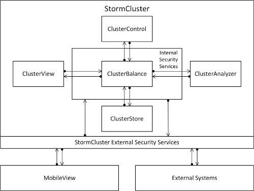

StormCluster Solution architecture overview
Introduction to the solution architecture of the StormCluster product line.
StormCluster Solution General Architecture
The main solution components of StormCluster have been designed to operate with maximum independence in order to facilitate unlimited scalability. These components operate under the management of ClusterControl in order to distribute computing jobs to an unlimited number of cluster nodes each running an unlimited number of components.
The StormCluster provides organizations with the ability to deploy and manage a massively distributed computing infrastructure as is needed to control the operations of a wide range of equipment systems and business operations.
Figure: StormCluster General Solution Architecture
StormCluster Technology Management Solution
StormCluster from Thunderbird provides a comprehensive technology management solution that enables large-scale enterprises to proactively manage their technology infrastructure. In particular, StormCluster faciltiates the efficient utilization of sophisticated computing services and does so in such a way that enables almost unlimited scalability. For organizations managing large networks of systems that need to interact on a near real-time basis, StormCluster is an ideal solution. StormCluster assembles together a variety of specialized components that together provide an integrated solution.
StormCluster ClusterControl Server
StormCluster ClusterControl server handles the communication between the ClusterBalance instances and the supporting nodes. It manages the data which the deployed analysis nodes collect from the set of cluster node servers and which are used to coordinate server activities. The StormCluster ClusterControl server receives event notifications from nodes and other components, and then sends out instructions according to the rules that have been configured.
StormCluster ClusterView Reporting Server
StormCluster ClusterView reporting server is a web-based reporting tool consisting of Workbooks. It collects data from the database and allows the publishing of Dashboard views or individual Worksheets. These Worksheets can be accessed by authorized users through the MobileView environment or through the system administration tools.
StormCluster ClusterAnalyzer Analytics Server
StormCluster ClusterAnalyzer is an analytics server that generates a number of reports and visualizations of the data being aggregated by the StormCluster deployment. It provides an overall statistical view of the entire cluster. ClusterAnalyzer provides dynamic views of the historical behaviour of hosts, resources, and workload across the cluster so that administrators can get an overall picture of cluster’s performance.
StormCluster ClusterBalance
A ClusterBalance instance is installed on each cluster. This component synchronizes data storage and processing across the different cluster nodes. Each ClusterBalance instance collects data from nodes receiving the initial updates and distributes the data resources to other nodes according to configuration rules specified.
StormCluster ClusterStore
A virtual ClusterStore is associated with each cluster grid. This components provides a secure data persistence service available to all processes running on all cluster nodes. The ClusterStore service collects not only operational data resources but also all administrative and maintenance data resources produced as a byproduct of all StormCluster transactions.
StormCluster MobileView
The MobileView application provides the User Interface (UI) for the StormCluster product environment. The MobileView application provides a mobile interface through which users can, in accordance with their security rights, access and interact with various components of the StormCluster system.